About
This is the documentation of the ADViSELipidomics package. ADViSELipidomics is a novel Shiny app for the preprocessing, analysis, and visualization of lipidomics data. It copes with the outputs from LipidSearch and LIQUID for lipid identification and quantification, and with data available from the Metabolomics Workbench. ADViSELipidomics extracts information by parsing lipid species (using LIPID MAPS classification) and, together with information available on the samples, allows performing several exploratory and statistical analyses. In the presence of internal lipid standards in the experiment, ADViSELipidomics can normalize the data matrix, providing absolute values of concentration per lipid and sample. Moreover, it allows the identification of differentially abundant lipids in simple and complex experimental designs, dealing with batch effect correction.
If you use ADViSELipidomics in your publications, we appreciate if you can cite:
E. Del Prete et al. (2022) ADViSELipidomics: a workflow for analyzing lipidomics data DOI: …………
Install
ADViSELipidomics is a stand-alone Shiny application developed in RStudio IDE (RStudio > 1.4) and implemented using the R language (R > 4.0), available at the following GitHub page: https://github.com/ShinyFabio/ADViSELipidomics. ADViSELipidomics is multi-platform. We tested its functionalities on the main operating systems: Windows 10, Windows 11, macOS 12, Ubuntu 18, and Ubuntu 20.
The user must first install R (https://www.r-project.org) and R studio (https://www.rstudio.com), if not yet available. Then, before installing ADViSELipidomics, the user might need to perform a few supplementary steps that depend on the operating systems:
Windows Install Rtools, a collection of tools necessary for building R packages in Windows, available at the following link: https://cran.r-project.org/bin/windows/Rtools
MacOS The following code should be written in the console:
brew install imagemagick@6
brew install cairo
- Ubuntu The following code should be written in the console:
If you are on Ubuntu run the following codes in the console:
sudo apt install build-essential libcurl4-gnutls-dev libxml2-dev libssl-dev
sudo apt-get install libcairo2-dev
sudo apt-get install libxt-dev
sudo apt install libmagick++-dev
sudo apt-get install libc6
sudo apt-get install libnlopt-dev
Then, for all the operating systems, ADViSELipidomics can be installed by typing the following code in the RStudio console:
if(!require("devtools")){
install.packages("devtools")
}
library(devtools)
install_github("ShinyFabio/ADViSELipidomics")
We kindly suggest updating all the R packages requested during the installation process of ADViSELipidomics Shiny application. Be careful that if you need to install many packages and you decide to use compilation, the process could take a lot depending on your hardware and operating system.
Finally to execute ADViSELipidomics the user can type the following code in the RStudio console:
library(ADViSELipidomics)
run_ADViSELipidomics()
 NOTE
NOTE
Depending on the screen size and especially the resolution of your monitor, ADViSELipidomics interface can be a bit different from how it was thought and built. Try to reduce or increment the zoom using Ctrl +/Ctrl - for Windows users or Command +/Command - for Mac users.
Finally, when a new ADViSELipidomics version is released, it can be updated with the same code for the installation.
Input Data
ADViSELipidomics allows the user to import files concerning different types of data:
- LipidSearch or LIQUID. ADViSELipidomics deals with the data files containing information on chromatographic peak area or peak intensity per lipid, obtained as output from external software for identifying and quantifying lipids (ADViSELipidomics currently supports the output formats from LipidSearch or LIQUID). Moreover, it requires the Target File with details on samples (such as treatments or biological replicates), and the Internal Reference File with bounds for the filtering step in the following modules. ADViSELipidomics shows a quality plot based on the sum of chromatographic peak area per sample (or replicate). In the case of LipidSearch output associated with internal lipid standards, ADViSELipidomics also requires all the Calibration Files for the construction of the calibration curves.
- Metabolomics Workbench. ADViSELipidomics can download in real-time suitable selected lipidomic experiments from the online repository;
- Excel. The user can upload two Excel files: the data matrix and the Target File;
- SummarizedExperiment. The user can upload a SummarizedExperiment R object (SE), with several types of information (data matrix, information on lipids, information on samples, metadata if available).
Hence, as can be seen, ADViSELipidomics requires different files that may change between the various data types. To sum up, here is a list with all the required files for each data type:
- LipidSearch with Internal Standard lipid:
- Target file (.xlsx)
- Internal Reference file (.xlxs)
- Data files coming from LipidSearch related to your samples (.txt)
- Calibration File for deuterated (.xlsx)
- Calibration File for nonlabeled (.xlsx)
- Concentration files coming from LipidSearch related to the internal standard (.txt)
- LipidSearch without Internal Standard lipid:
- Target file (.xlsx)
- Internal Reference file (.xlxs)
- Data files coming from LipidSearch related to your samples (.txt)
- LIQUID
- Target file (.xlsx)
- Internal Reference file (.xlxs)
- Output coming from LIQUID related to your samples(.tsv)
- User’s Excel File
- Target file (.xlsx)
- Data Matrix File (.xlsx)
- SummarizedExperiment
- SummarizedExperiment object (.rds)
For Metabolomics Workbench you don not need to import anything, just choose the Metabolomics Workbench ID study.
Before running ADViSELipidomics, make sure that you have all the required files and that they are compiled properly. Apart from the output files from LipidSearch and LIQUID, ADViSELipidomics requires that the Excel files have a given structure with some mandatory columns. Here we provide a guide to the creation of these Excel files.
Data files (LipidSearch or LIQUID)
The output of LipidSearch and LIQUID are some text files containing information on chromatographic peak area or peak intensity per lipid. If your data come from LipidSearch, you should have a deuterated file and a non-labeled file for each sample (or replicate). The extension of these files should be .txt. ADViSELIpidomics accepts files from LipidSearch version 4.2.29. If your data come from LIQUID you can have a positive and a negative file (with a .tsv extension). In any case, put your data file in a folder and rename each file with your sample id in a proper way.
Example:
Your sample is called “AF-1CM” and you have two technical replicates. Then, depending on the output software, the name of the data files should be:
- for LipidSearch: “AF-1C-M_deuterated_1.txt”, “AF-1C-M_nonlabeled_1.txt” and “AF-1C-M_deuterated_2.txt” and “AF-1C-M_nonlabeled_2.txt”
- for LIQUID: “AF-1C-M_positive_1.tsv”, “AF-1C-M_negative_1.tsv” and “AF-1C-M_positive_2.tsv”, “AF-1C-M_negative_2.tsv”
The last two characters (e.g. “_1”) refer to the technical replicate. If you don not have technical replicates just remove these two last characters (so for example in the case of LipidSearch you should have “AF-1C-M_deuterated.txt” and “AF-1C-M_nonlabeled.txt”).
NOTE
In the choice of your sample name, it’s better to avoid special characters and DO NOT use underscores (_) . This character is used by ADViSELipidomics to split the file name into three parts: the sample name, the type of file (deuterated/nonlabeled or positive/negative), and the technical replicate as shown in the following picture:
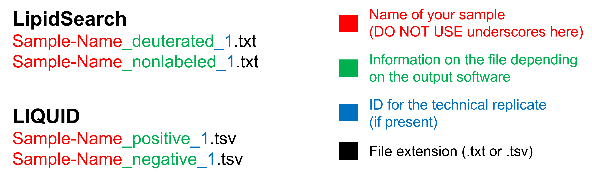
For example, a bad name could be “Blood_bag_deuterated_1.txt”, while a good name is “Blood-bag_deuterated_1.txt”.
Target File (LipidSearch, LIQUID, and User’s Excel File)
The Target File is an Excel file that contains all the information about your samples. It is the most important file since it is used for LipidSearch import, LIQUID import, and User’s Excel File import. This file requires some mandatory columns that have to be filled with some criteria:
- SampleID (LipidSearch, LIQUID, and User’s Excel) this column contains the ID of each sample. To prevent errors, the best way to write the IDs is: “samplename_1” where in “samplename” you can write your sample name and “_1” represents the identification for the technical replicate. If your experiment does not have technical replicates, you can simply write “samplename”. A good SampleID could be “AF-1C_1” if technical replicates are present, or “AF-1C” if not. A bad name could be “AF_1C_1” (with another underscore).
- File_name (LipidSearch, LIQUID) this column contains the name of the data files coming from LipidSearch or LIQUID. In both cases, for each sample there are two different files. In LipidSearch you have a “deuterated” and a “nonlabeled” file, while in LIQUID you have a “positive” and a “negative” file. Depending on your data type, write both file names in the corresponding cell separated by a semicolon “;” without any space.
- Norm_factor (LipidSearch, LIQUID - optional) If you need to normalize your data by a normalization factor, you can add this column and write a number (be careful with decimal points) for each sample. If it is not present, data will not be normalized.
The picture below shows a Target File example where the mandatory columns are enlightened in yellow and the optional column in green. You can fill the Target File with any other informative column, just try to avoid special characters like \^$?*/|+()[]-{} and whitespace. You can use _ instead of whitespace. For example, a column “Bio_replicate” may contain values like “BD1” or “BD_1” but not “BD-1” (Differential Analysis does not work if there are “-”).
NOTE
If your Target File does not contain at least one informative column about the samples (e.g. Product, Model_type, etc.), you can not perform any exploratory or statistical analysis.
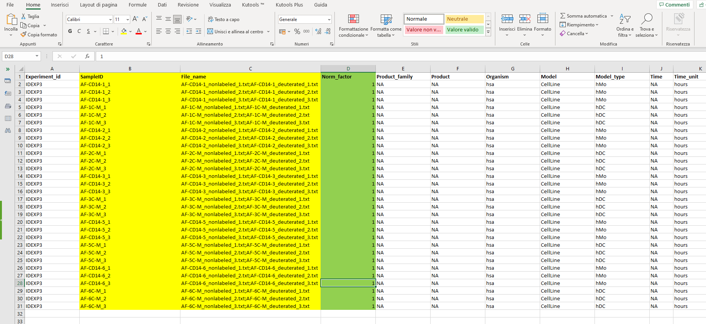
The example target file can be downloaded from here:
 Targetfile_Lipidomics.xlsx
Targetfile_Lipidomics.xlsx
Internal Reference File (LipidSearch, LIQUID)
In LipidSearch and LIQUID option, ADViSELipidomics requires also another Excel file here called Internal Reference File which contains the list of the Internal Standard lipids defined per class and adduct, upper/lower bounds for the number of carbon atoms, upper/lower bounds for the number of double bonds, nominal standard concentration, and upper/lower bounds for the concentration linearity in the calibration curves. This file has many mandatory columns that depend both on the external software (LipidSearch, LIQUID) and the presence of internal standards (only for LipidSearch).
- LipidSearch
- Class lipid class of interest according to the nomenclature of LipidSearch (e.g. DG )
- Ion the ion of interest written according to the nomenclature of LipidSearch(e.g. M-H )
- MinRt minimum retention time of the class (numeric)
- MaxRt maximum retention time of the class (numeric)
- InternalStandardLipidIon name of each internal lipid standard according to the nomenclature of LipidSearch* (e.g. Cer(d18:1_17:0)-H )
- MinLinearity minimum value for the range of linearity in the calibration curves. (numeric) ONLY IF YOU USE INTERNAL STANDARD
- MaxLinearity maximum value for the range of linearity in the calibration curves. (numeric) ONLY IF YOU USE INTERNAL STANDARD
- NominalStdConcentration concentration of each internal lipid standard initially spiked into the sample (numeric) ONLY IF YOU USE INTERNAL STANDARD
*nomenclature of LipidSearch: LipidSearch nomenclature is very similar to Lipid Maps nomenclature except for the use of underscore instead of backslash between different stereospecific numbering (sn) and the absence of the double-bond geometry. An example of the required nomenclature can be seen in the picture below.
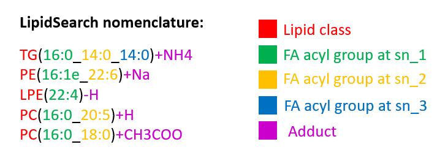
The picture below shows an Internal Reference File example in the case of LipidSearch and the presence of Internal Standards. In yellow are the mandatory columns, and in green the columns needed only in the presence of Internal Standards. The “Unit_measure” column is not used but can be helpful to check that each standard concentration has the same unit of measure. If you have different units of measure, convert them to the same.
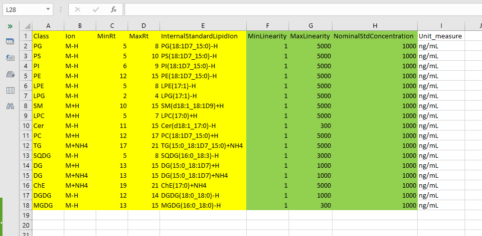
The Internal Reference File example for the LipidSearch with Internal Standards option can be downloaded from here:
Internal_Reference_file_LipidSearch_withIS.xlsx
- LIQUID
- Class lipid class of interest according to the nomenclature of LIQUID (e.g. DG )
- Adduct the ion of interested written according to the nomenclature of LIQUID (e.g. [M-H]+ )
- MinRt minimum retention time of the class (numeric)
- MaxRt maximum retention time of the class (numeric)
The picture below shows an Internal Reference File example in the case of LIQUID. In yellow are the mandatory columns.
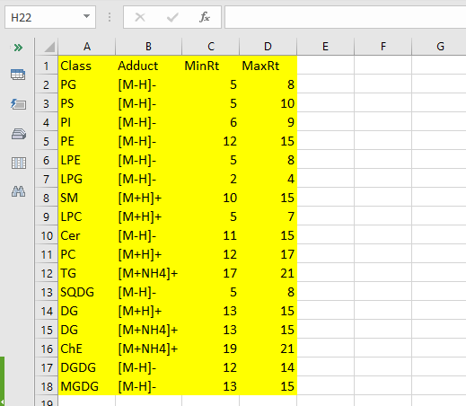
The Internal Reference File example for the LIQUID option can be downloaded from here:
Internal_Reference_file_LIQUID.xlsx
Calibration Files (LipidSearch with Internal Standards)
In the case of LipidSearch, if you have Internal Standard, you can choose to use them or not. In this case, you need to upload also some Calibration Files which are two Excel Files, and the data files coming from LipidSearch (here called concentration files). The concentration files are the same .txt files described in Section @ref(sec21). Please, refer to that Section if you need more information about how to rename the files. Be sure that all the concentration files are inside a folder and that they aren not mixed with the data files of Section @ref(sec21).
Next, ADViSELipidomics, requires two Calibration Excel files, one for the Non-labeled and the other for the Deuterated. They share the same structure:
- Concentration (ng/mL) the concentration of the standard (numeric)
- Class the lipid classes of interest separated by a comma , (e.g. PG,PS,PI,PE,SM,PC,TG,DG )
- Name the name of the data files coming from LipidSearch. They have to match perfectly with the file names. If you have technical replicates, separate them by a semicolon “;” without any space. (for example in the deuterated: ISMix_5ugmL_deuterated_1.txt;ISMix_5ugmL_deuterated_2.txt;ISMix_5ugmL_deuterated_3.txt)
The picture below shows an example of a Calibration Excel file for the deuterated.
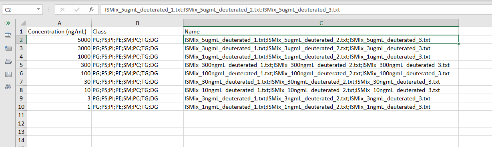
An example of the Calibration Deuterated and Calibration Nonlabeled Excel files can be downloaded here:
Calibration_Deuterated.xlsx
Calibration_NonLabeled.xlsx
User’s Excel File
If you already have a matrix file containing the abundance for each lipid, you need just two Excel files: a Target File and a Data Matrix File. Here the Target File has only one mandatory column, the SampleID. The Data Matrix (.xlsx file) must have the list of the lipids in the first column, which must be called “Lipids”, and then the samples (or replicates) in the following columns, with the column names that are the same of the SampleID from the Target File. It is not necessary that the matrix is full (i.e. without missing values) since after uploaded, it is possible to filter and impute NAs. The picture below shows an example of a Data Matrix Excel file.
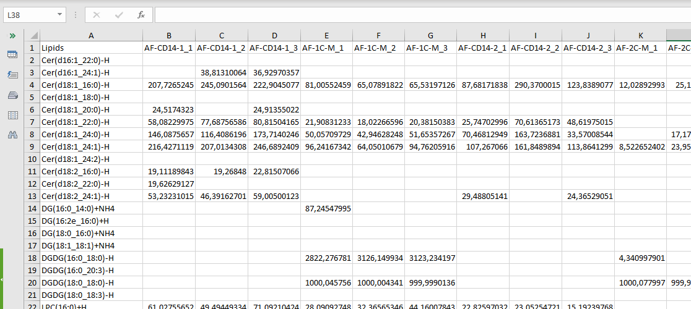
NOTE
The column names in the data matrix must follow the same SampleID rules described in Section @ref(sec22).
An example of the Data Matrix can be downloaded from here:
Excel_Data_Matrix.xlsx
SummarizedExperiment
ADViSELipidomics allows the user to load a SummarizedExperiment (SE) object, saved as a .rds file, already prepared or previously downloaded after running ADViSELipidomics. Since the required SE object has a complex structure, we do not recommend uploading a SE object that was not downloaded from ADViSELipidomics. The idea behind this option was that the user can save the SE object after the preprocessing steps and performs the exploratory and statistical analysis at another moment.
Metabolomics Workbench
In the case of Metabolomics Workbench, you don not need to import anything, because ADViSELipidomics downloads a selected Metabolomics Workbench experiment and converts it into an SE object.
Guide
ADViSELipidomics has a graphical user interface (GUI) implemented using the shiny and golem R packages. It has five main sections: Home, Data Import & Preprocessing, SumExp Visualization, Exploratory Analysis, and Statistical Analysis. Each section is accessible from a sidemenu on the left.
Home section
The Home section includes general information about ADViSELipidomics as the citation, the link to the GitHub page, and the link to this manual. From the “Start!” button, it is possible to go to the following section where the user can upload the lipidomic data.
Data Import & Preprocessing
This section allows to import and process lipidomic data from various sources.
When you open this section for the first time after launch, a message box appears and asks you to write your name and your company. This information will be stored in the final output of ADViSELipidomics. By default, if you click on “Run” the User will be “Name” and the Company will be “Company”.
The picture below shows the Data Import & Preprocessing section (with the different parts enlightened with red rectangles).
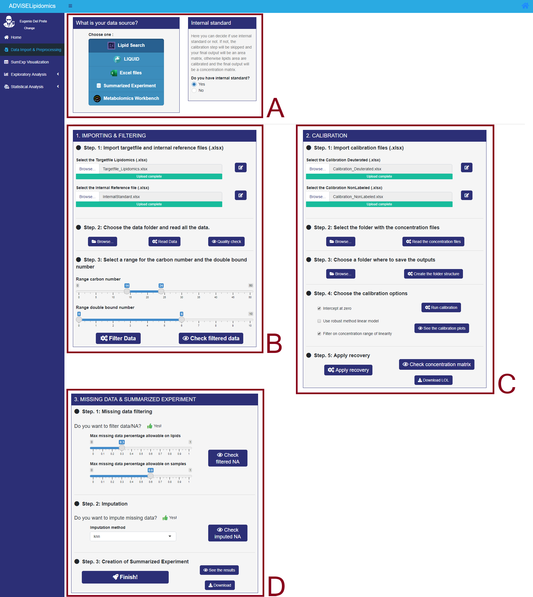
- Rectangle A allows the user to choose between LipidSearch, LIQUID, Excel files, Summarized Experiment, and Metabolomics Workbench. Moreover, it is also possible to select between experiments with or without internal standards (this option is available only for LipidSearch import).
- Rectangle B shows three different steps for Importing & Filtering: importing data, storing, and reading data, filtering data.
- Rectangle C shows five additional steps for Calibration: importing calibration files, storing calibration files, selecting the folder for the results, selecting calibration options, application of recovery.
- Rectangle D shows two different steps for Filtering and Missing Data imputation and creating the SummarizedExperiment object. Note that the layout of the Data Import & Preprocessing section and the required files depends on the type of input data format choosen by the user. Go to Chapter @ref(inputdata) if you need help gathering all the required files.
Since the option LipidSearch output with Internal Standard (IS) has the largest number of required files and steps, here we provide a complete guide for this case. Anyway, this guide applies also to LipidSearch without IS and to LIQUID: in these cases, the only difference is that there isn’t the CALIBRATION module (Section @ref(sec322)).
LipidSearch (IS) EXAMPLE - IMPORTING & FILTERING module
The first module is the IMPORTING & FILTERING module, where the user can upload the Target File, the Internal Reference File, and the Data files from LipidSearch.
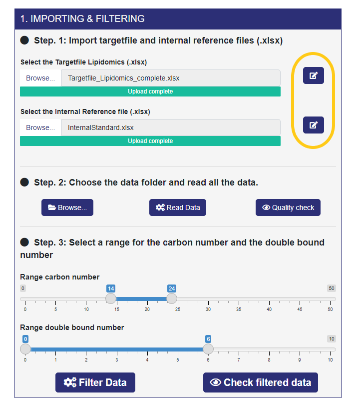
- Step 1. The first files that you must import are the Target File and the Internal Reference File (Rectangle A, steps 1 and 2). Next to each of them there is a button (yellow squared rectangle) that allows you to edit the Excel files. You can filter the rows by one or more conditions, select only the needed columns, and download the edited data. To apply the editing, you have to enable the button next to the download button and click on the “Done” button (right-top corner). Anyway, a help button guides you through the editing options.
- Step 2. Here, you choose the folder containing the data files coming from LipidSearch (only the data files related to the samples and NOT to the IS). After selecting the folder, click on the “Read Data” button, and ADViSELipidomics will start reading all the data files. A progress bar shows the percentage of completion. When the reading process is completed, you can perform a quality check on the area of each sample by clicking the “Quality check” button.
- Step 3. Finally, here you can filter non-informative lipids based on retention time in the range, number of carbon atoms in the range, even number of carbon atoms, number of double bonds in the range, duplicated lipids. The two sliders allows you to choose the range for the carbon number and the double bound number. The other filters come from the Internal Reference File. If there are duplicated lipids (same m/z values for lipid peaks), ADViSELipidomics takes only the lipids with the maximum peak area. The “Filter Data” button starts this process. In the end, you can check the filtered data for each sample.
LipidSearch (IS) EXAMPLE - CALIBRATION module
If the previous module is completed, the CALIBRATION module appears next to it. The Calibration module creates the calibration curves and the calibration matrix. It uses the Internal Lipid Standards reported in the Internal Reference file, and the correspondence between the Concentration Files and the lipid classes declared in the Calibration File. This module extracts the relationships between peaks area and concentration values for each internal lipid standard, constructing the calibration curves with a linear model and plotting them. The linear regression model can be classical or robust, with zero or non-zero intercept. Finally, the calibration matrix resumes all the points from the calibration curves. After the calibration process, ADViSELipidomics stores slope and intercept values for the recovery module.
As already stated, this module appears only if you are using LipidSearch output with Internal Standard (and you clicked on “Yes” in the radiobutton that asks you “Do you have internal standards?”). In this module, you need two Calibration Files (.xlsx, see Section @ref(sec24)) and the Concentration files coming from LipidSearch related to the internal standard (.txt, see Section @ref(sec21)).
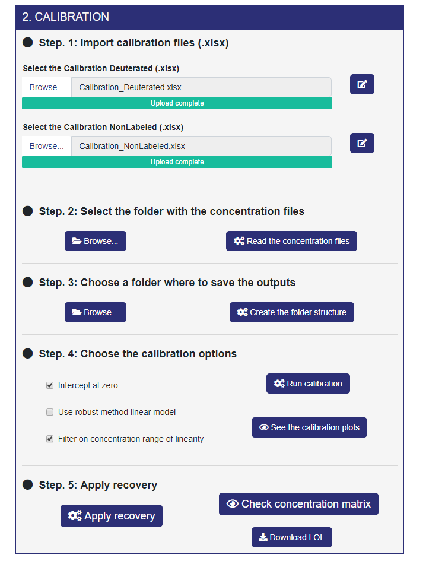
- Step. 1 Here, you can upload the Calibration Files (.xlsx) for both Deuterated and Nonlabeled. This step is remarkably similar to Step 1 of the IMPORTING & FILTERING module. You can find further information about these files in Section @ref(sec24).
- Step. 2 Select the folder containing the Concentration files coming from LipidSearch and click on “Read the concentration files”. Also, this step is very similar to step 2 of the previous module.
- Step. 3 Here, you can select the folder where saving the output from LipidSearch. ADViSELipidomics creates for you the folder structure.
- Step. 4 In this step you can choose some calibration options and visualize the calibration plot for each standard.
- Step. 5. Finally, you can apply the recovery percentage to the concentration values for each lipid, considering the Internal Lipid Standards as lipid class reference. This normalization provides absolute concentration values for the lipids, and the resulting concentration matrix can be seen by clicking on the “Check concentration matrix” button. Here it’s possible also to visualize the missing values(if applicable). Moreover, from the “Download LOL” button you can download a table containing all the lipids filtered because outside the linearity range.
LipidSearch (IS) EXAMPLE - MISSING DATA & SUMMARIZED EXPERIMENT
This is the last module of the preprocessing menu where you can filter and impute missing values (NAs), build the SummarizedExperiment object, and download it.
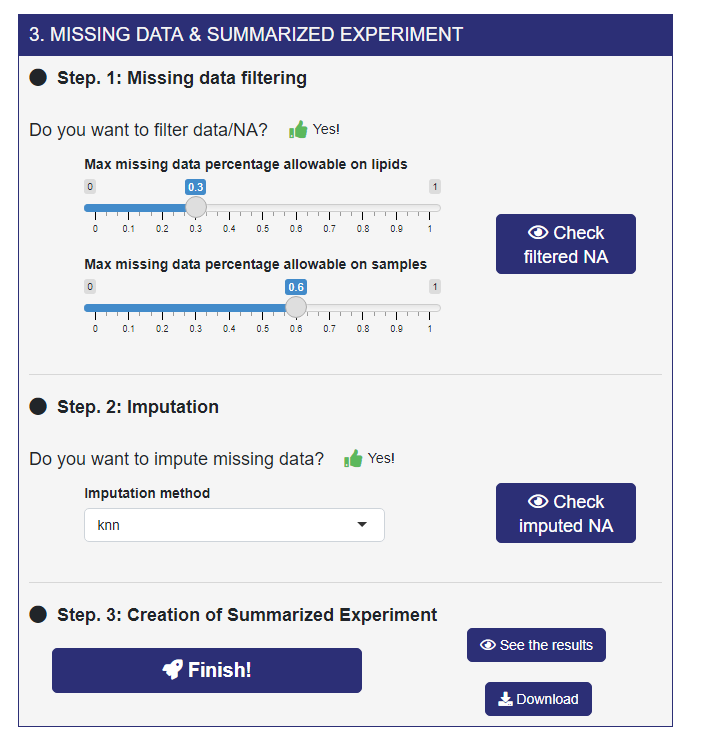
- Step 1. In the first step ADViSELipidomics computes the percentage of NAs, for each lipid (matrix rows) and each sample (matrix columns). Second, it allows retaining only lipids and/or samples with a percentage of missingness below thresholds chosen using the sliders. For example, if you set Max missing data percentage allowable on lipids to 0.3 Max missing data percentage allowable on samples to 0.6 that means that only lipids (rows) with less than 30% of NAs and samples (columns) with less than 60% of NAs are stored. After that, by clicking on the “Check filtered NAs” button, ADViSELipidomics provides the missing data distributions and the data dimension before and after filtering NAs.
- Step 2. Next, you can impute the remaining NAs with different imputation methods, three Not Model-Based (mean, median, and knn) and one Model-Based (irmi).
- Step 3. In the final step, ADViSELipidomics build the SummarizedExperiment object and download it. By clicking on the “See the results” you will be redirected to the next menu, SumExp Visualization.
SumExp Visualization
Once you ended successfully the Preprocessing module, the first thing that you can do is check the just created SummarizedExperiment (SE) object. This can be done in the SumExp Visualization menu. The complex structure of the SE object can be explored by a red gear icon where you can choose what part of the SE object should be shown and summarise the data (if you have technical replicates).
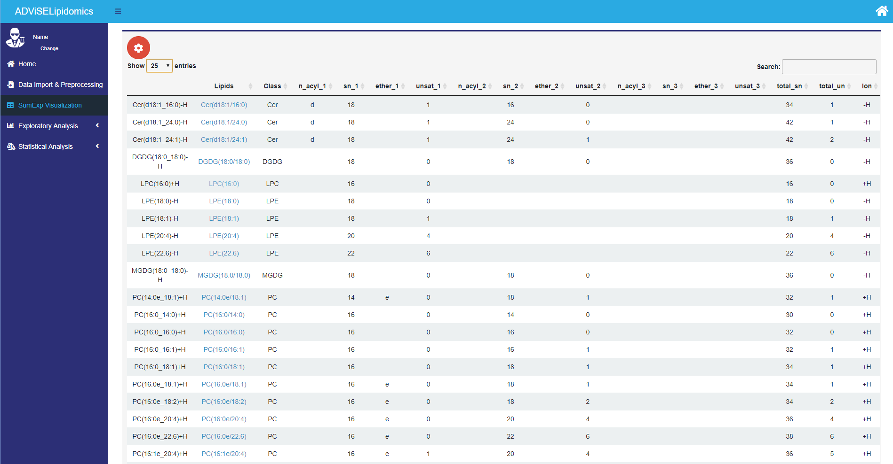
The picture above shows the rowData part of the SE object containing the annotation on lipids. Each lipid in the “Lipids” contains a hyperlink to the SwissLipids online repository to provide structural, biological, and analytic details.
Exploratory Analysis
The Exploratory Analysis menu includes three sub-menus: Plots, Clustering, and Dimensionality Reduction.
Plots
This sub-menu allows the user to create different types of plots to show the trend and behavior of data, exploring them from lipid and/or sample points of view. It has four panels: Lipids, Scatterplot, Heatmap, and Quality plots.
- Lipid plots. It is possible to 1) represent the lipid class distribution (counts of lipids per class) with a pie chart, boxplot, and spider plot; 2) visualize the percentage proportion of lipid class for each sample using a barplot, 3) compare the lipid species abundance for each condition; 4) inspect the abundance of a lipid, selected by the user, in relationship with a feature from the target file (e.g., treatment) using boxplots;
- Scatterplots. It is possible to visualize the relationship between lipid abundance in two samples;
- Heatmap. It provides a highly customizable heatmap to show possible clusters among lipids or samples. The user can select many parameters: a) row annotation with the feature from the target file, b) column annotation with the information from lipids parsing, c) dendrograms for lipids and/or samples, d) distance function (Euclidean, maximum, Canberra), e) clustering method (complete, average, median, Ward); f) number of clusters for lipids and/or samples. The user can select an area in the overall heatmap and have a detailed zoom of the area itself, with associated information;
- Quality plots. It provides different typologies of plots (barplot, boxplot, density plot) to show the total amount of abundance (logarithmic scale) per sample, considering as reference a feature from the target file, to show possible unexpected behavior among samples or replicates for the same sample.
The picture below shows an example of the Lipid class proportion plot.
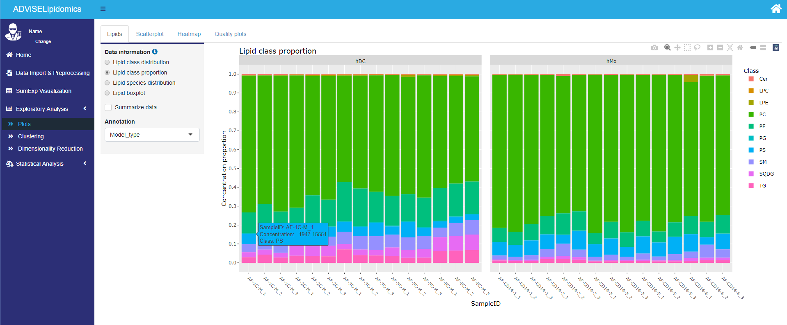
Clustering
The Clustering sub-menu allows the user to cluster the data by lipids or samples. The user can choose the number of clusters and the clustering method among the following algorithms: hierarchical clustering (using single, complete, Ward as linkage function) or partitioning clustering (k-means, PAM, Clara). If you choose a partitioning clustering, ADViSELipidomics performs before a PCA. Additional plots, such as the silhouette plot, can suggest the number of clusters to use.
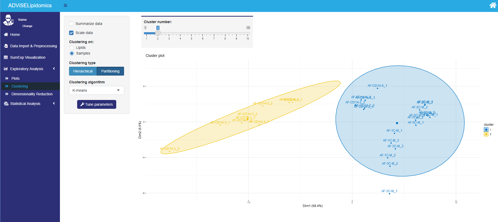
Dimensionality Reduction
The Dimensionality Reduction sub-menu allows the user to choose between unsupervised (PCA) and supervised approaches (PLS-DA, sPLS-DA) to represent the data in a two or three-dimensional space. It contains three panels PCA, PLS-DA, and sPLS-DA.
- PCA. ADViSELipidomics computes the Principal Component Analysis (PCA), showing the results with different plots: a) 2D plot, b) biplot, c) scree plot, d) loadings plot, e) 3D plot. The user can highlight the features from the target file with different colors and select the number of components to use for the loading plots.
- PLS-DA. ADViSELipidomics computes the Partial Least Square - Discriminant Analysis, showing the results with a 2D plot and a Correlation Circle plot. The user can select the group variable and the number of components for the computation. The 2D plot can be customized from the red gear icon. Furthermore, ADViSELipidomics can perform a Cross-Validation to identify the best number of components. It may take a while.
- sPLS-DA. ADViSELipidomics can compute also the sparse version of the PLS-DA. The panel is very similar to the PLS-DA panel, but since it’s a sparse version, it is possible to choose the number of variables to select on each component (called “KeepX”). Still here ADViSELipidomics can perform a Cross-Validation that helps the user to choose the best number of components and the best “KeepX”.
Here’s an example of a 2D plot for the PCA.
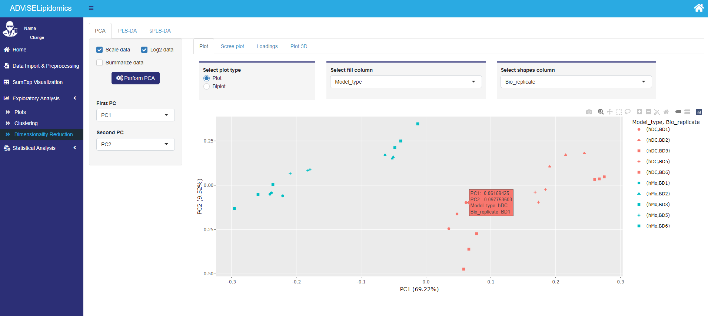
Statistical Analysis
The Statistical Analysis menu includes two sub-menus: Differential Analysis and Enrichment Analysis.
Differential Analysis
The Differential Analysis sub-menu applies statistical algorithms to identify lipids with a different abundance among samples associated with experimental conditions (i.e., treatment versus control). It has two panels: Build DA and Comparisons. The first allows the user to build and run the differential analysis, while the second shows the “differential expressed” lipids with a Venn Diagram and an Upset plot.
The picture below shows the first panel, Buil DA, with the different parts enlightened in red rectangles.
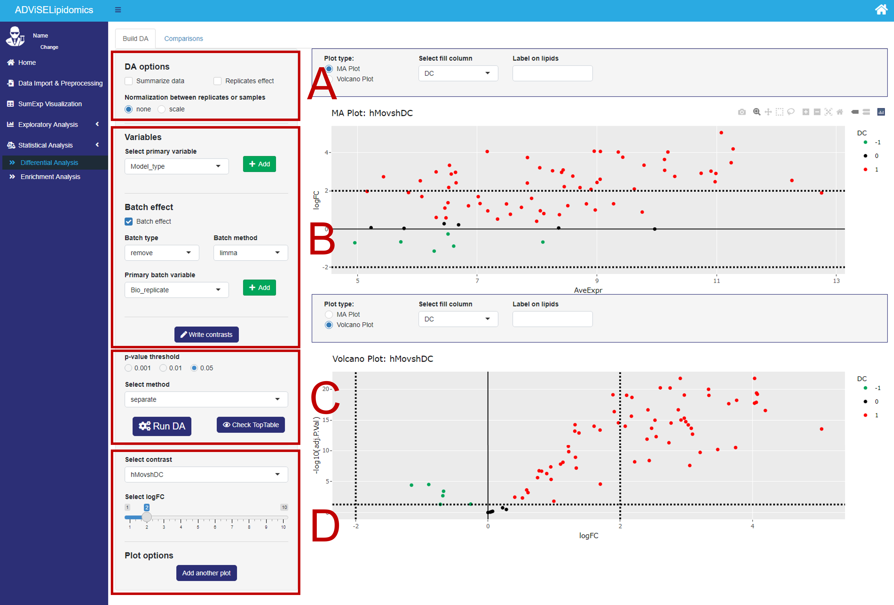
- Rectangle A. Here, you can select between one of the two SE objects obtained from the previous steps (i.e., the one with the lipid abundance of all samples or where the technical replicates are averaged). It is possible to normalize the data matrix by a scaling factor at this stage (“Normalization between replicates or samples”). Moreover, when a data matrix has technical replicates, you can even incorporate the replicate effect in the model by checking the “Replicates effect” box.
- Rectangle B. Here, you can build your experimental designs. An ADViSELipidomics complex design can include up to two experimental conditions and at most two variables to consider as batch effects. First, you can select a primary variable, and with the plus button, you can add a second variable. Next, you can decide to consider the batch effect by choosing up to two batch variables. More in detail, ADViSELipidomics copes with the batch effects by either fitting the model with the batch variables or removing the batch effect before fitting the model. To handle the batch effect, ADViSELipidomics uses the removeBatchEffect function from the limma package or the ComBat function (parametric or non-parametric method) from the SVA package. Finally, with the “Write contrasts” button, it opens a box where you can generate the contrast list. This functionality works with up to two total variables (e.g. primary variable + secondary variable (“Batch type” set to “remove”) or primary variable + primary batch variable with “Batch type” set to “fit”).
- Rectangle C. Here, you can select a threshold for the adjusted p-values, and a method for the decideTests function (limma package) used to identify “differentially expressed” lipids. Finally, click on the “Run DA” button to run the differential analysis. You can also check and download a table of results (TopTable).
- Rectangle D. In this rectangle there are some plot options, as the choice of the contrast, the threshold for the logFC, and the possibility of adding another plot. There are two different plots: a volcano plot and a MA plot, both interactive where you can change the fill variable and add labels to lipids of interest.
After ADViSELipidomics performed the DA, you can go to the Comparisons panel to visualize the “differential expressed” lipids and perform pairwise comparisons between different contrasts using the Venn diagram and the Upset plot. Finally, it reports the list of common lipids in tabular form. These two plots are available only with at least two contrasts.
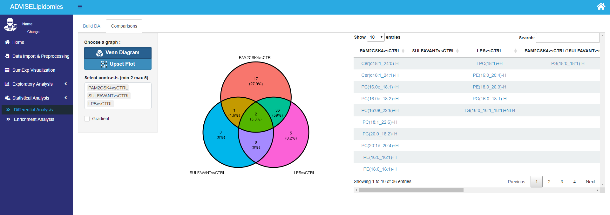
Enrichment Analysis
The Enrichment Analysis sub-menu allows for building different lipid sets from the chemical features of the lipids: i.e., lipid classes, total chain length (the sum of all carbon atoms in the tails), total unsaturation (the sum of all the double bonds in the tails). After defining a ranking for the differential abundant lipids (i.e., ranking considering logarithmic Fold Change, p-value, adjusted p-value, or B statistic), it identifies enriched sets of lipids using a permutation test. To achieve a robust result, it was necessary to perform a few million permutations, hence this process may take a while. Since Enrichment Analysis takes as input the differential analysis results, you need first to run the last one.
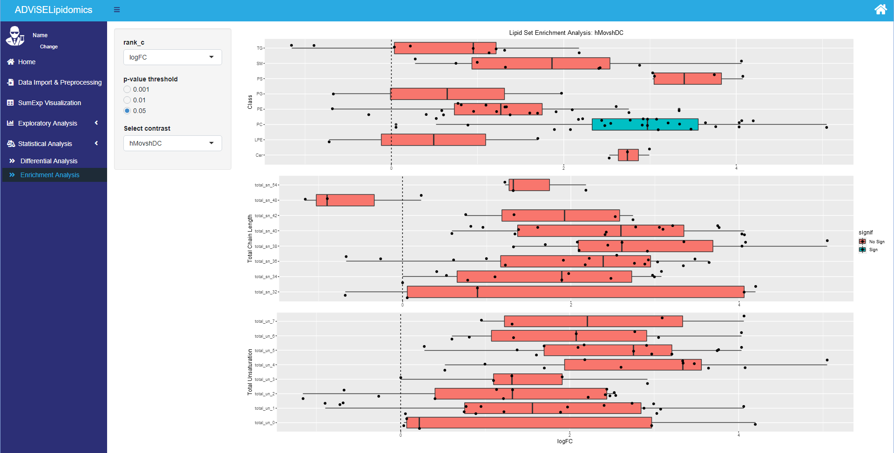